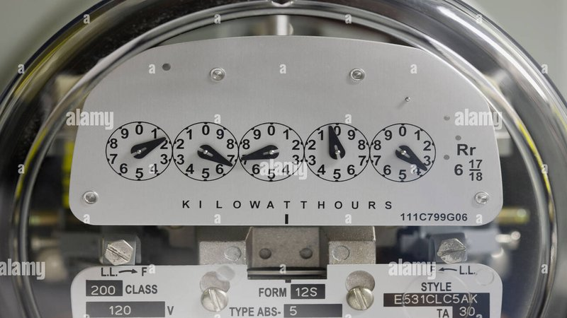

I get asked all the time: “Can I do my own energy audit?” The answer is yes. You won’t get a blower door number. You won’t have thermal images. But you can find 80% of the problems with your own eyes and hands. And you can fix most of them yourself for little money.
I’ve done over a thousand professional audits. But I started out as a homeowner with a flashlight and a curious mind. This is the walkthrough I give my friends and family. Do it over a weekend. You don’t need special tools. Just a flashlight, a stick of incense, a notepad, and about two hours.
Saturday morning: the attic.
This is the most important place. Heat rises. If your attic is leaky and under‑insulated, you’re throwing money out the roof. Go up there safely. Use a proper ladder. Step only on the joists, not the drywall. Take a flashlight.
First, look at the insulation depth. Measure it. Fiberglass or cellulose should be at least 12 inches deep in most climates. In cold climates, 16‑20 inches. If you can see the tops of the joists, you need more insulation.
Second, look for dark spots on the insulation. That’s dirt from air leaks. Warm air rising from your house carries dust. When it hits the cold attic, the dust deposits. Those dark spots are holes. Seal them with spray foam or caulk. Common leak locations: around light fixtures, plumbing stacks, the chimney, wire penetrations, and the attic hatch.
Third, check the attic hatch itself. Is it weatherstripped? Does it close tightly? Most attic hatches are just a piece of plywood with no seal. That’s a big hole. Add weatherstripping and foam board insulation on the back.
Fourth, look for disconnected ducts. If you have HVAC ducts in the attic, feel for air blowing out of joints. Use the incense. If the smoke moves, you have a leak. Mastic and metal tape can fix most leaks.
I spent about an hour in my own attic last year. I found three big gaps. I sealed them with a $12 can of spray foam. My heating bill dropped $25 the next month. That’s a 400% return on investment in one month.
Saturday afternoon: the basement or crawlspace.
Cold air falls. In winter, your basement is a source of drafts. In summer, moisture can cause mold. Go down there with your flashlight.
First, look for gaps around the rim joist. That’s the wood beam that sits on top of your foundation. Gaps there let in cold air and bugs. Seal them with caulk or spray foam. I sealed my rim joist and stopped a mouse problem. Bonus.
Second, check your ductwork if you have it. Feel for leaks. Seal with mastic, not duct tape. Duct tape dries out and fails. Mastic is goopy but it lasts.
Third, look for water stains or standing water. If you have water, you have a humidity problem. That makes your AC work harder. Fix the leak or install a dehumidifier.
Fourth, check your water heater and furnace. Are they old? Is the water heater warm to the touch? If it’s warm, it needs insulation. You can buy a water heater blanket for $30.
Sunday morning: windows and doors.
Walk through your house on a windy day. Hold your hand near the edges of windows and doors. Feel for cold air. Use the incense. If the smoke blows, you have a leak.
For doors, replace the weatherstripping if it’s cracked or missing. It’s cheap and easy. For windows, use rope caulk for the season. It’s a temporary seal that peels off in spring. For permanent fixes, add new weatherstripping or recaulk the frame.
Also check for single‑pane windows. They feel cold in winter and hot in summer. If you can’t replace them, add window film or heavy curtains.
I once rented an apartment with single‑pane windows. I used rope caulk on every window. My heating bill dropped $30 a month. The caulk cost $10.
Sunday afternoon: appliances and lighting.
Now for the easy stuff. Walk through every room. Count the light bulbs. Are any of them incandescent or halogen? Replace them with LEDs. A 60W incandescent running 3 hours a day costs about $10 per year at $0.15 per kWh. An LED costs about $1.50 per year. Swap 20 bulbs, save $170 per year. LEDs are cheap now. A 4‑pack costs $5.
Next, check your refrigerator. Is it from the 1990s? It could be using 1,500 kWh per year. A new Energy Star fridge uses 400 kWh. If you’re a homeowner, replace it. If you rent, ask your landlord. Also check the temperature. Your fridge should be 37‑40°F. Your freezer should be 0‑5°F. Colder than that wastes energy.
Next, look at your thermostat. Is it programmable? If not, buy one for $50. Set it to 68°F in winter when you’re home, 60°F at night or away. In summer, 78°F when home, 85°F when away. That alone can save 10‑15% on heating and cooling.
Next, find your vampire devices. Look for little red and green lights. Plug them into a power strip. Turn off the strip when not in use.
Finally, check your showerhead. If it flows more than 2.5 gallons per minute, you’re wasting hot water. A low‑flow showerhead uses 1.5‑2.0 gpm. You can buy one for $15. The payback is a few months.
The stuff you can’t DIY.
LED Savings
Estimate savings from switching to LED
All data stays in your browserAfter you finish, you’ll have a list of problems. Most you can fix yourself. But some require a pro. If you have a gas furnace or water heater, don’t mess with it. Call an HVAC tech. If you have knob‑and‑tube wiring, don’t add insulation over it. Call an electrician. If you suspect asbestos or lead, don’t disturb it. Get tested.
Also, if your house feels stuffy or you have mold, you may need a blower door test to find hidden leaks. That’s a job for a professional energy auditor. But it’s worth it.
What I found in my own DIY audit.
Last year, I did this exact walkthrough. I found: missing weatherstripping on my back door, a gap around the attic hatch, two old incandescent bulbs in the basement, a refrigerator set to 34°F, and a showerhead flowing at 3.2 gpm.
I fixed everything in one weekend. Cost: $45 for weatherstripping, spray foam, LED bulbs, and a new showerhead. Savings: about $120 per year. Payback: 4.5 months. Plus my house is more comfortable.
That’s the power of a DIY audit. You don’t need a PhD. You just need to look.
When to call a pro.
If you’ve done all this and your bills are still high, call an energy auditor. We have blower doors, thermal cameras, and duct testers. We can find the hidden problems. In my area, an audit costs about $300. Many utilities offer rebates. I’ve seen audits for $100 after rebate.
For a typical home, an audit finds $500‑$1,000 per year in savings. That’s a good return.
But for most homes, the DIY audit will find plenty.
I have a tool that helps you track your findings.
The Insulation ROI Calculator can help you decide if adding attic insulation is worth it.